Balade dans les Ardennes aller-retour à partir de Liège.


Choisissez votre niveau,
préparez votre matériel,
on s'occupe du reste.
À chaque saison, nous vous proposons trois balades en fonction de votre niveau :
· le niveau 🟢 facile s'adresse à toute la famille, dès 7 ans ;
· le niveau 🟠 intermédiaire s'adresse aux parents accompagnés de jeunes à partir de 12 ans ;
· le niveau 🔴 difficile est réservé aux adultes et jeunes adultes, pour les 18 ans et plus.